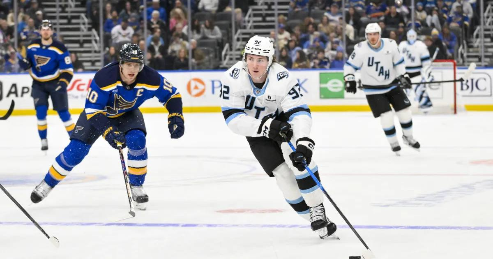

Cooley's Two Goals Fall Short as the Kraken Win 5-3
Logan Cooley scored twice in the third period to tie it 3-3 — the hat-trick watch was real until the final minutes — but Mackie Samoskevich's late goal gave Seattle the 5-3 win.

Disclosure: this post contains affiliate links. I earn a commission on qualifying purchases.
Logan Cooley scored twice in the third period to tie the game 3-3, and the hat-trick watch was real until the final minutes. Seattle regained the lead on Mackie Samoskevich's goal at 5:25 of the third and closed out the 5-3 win.
How the third period unfolded
Utah trailed 3-1 heading into the third. Cooley cut it to 3-2 on the power play just 27 seconds in, deflecting Mikhail Sergachev's wrist shot from the point. Then, at 7:42, he tied it 3-3 with his second of the period, finishing a give-and-go with Sergachev from the high slot. (NHL.com)
Seattle coach Lane Lambert called timeout after the tying goal: "We were standing there watching them play, and we needed to be reminded that we're actually pretty good too."
The winner
With the score tied 3-3 — and each team having a goal taken off the board on successful offside challenges — Bobby McMann stole the puck near center ice, got a shot deflected wide, and tapped the rebound to Samoskevich, who pushed it in for his fifth of the year. Freddy Gaudreau sealed it with an empty-netter at 19:00. (TSN/AP)
The numbers
• Final: Seattle 5, Utah 3 — Thursday night at Climate Pledge Arena
• Shots: Utah 36, Seattle 23 — Utah dominated the shot clock and lost anyway
• Seattle scorers: Eberle (1G, 1A), Montour (1G, 1A), Beniers, Samoskevich, Gaudreau (EN)
• Utah scorers: Cooley (2G), Trocheck; Sergachev (2A)
• Saves: Philipp Grubauer 33, Karel Vejmelka 18
• Records: Seattle 7-3-1 (5-1-1 in last seven); Utah 7-4-0
It's the second game in a row Seattle blew a multi-goal third-period lead and still won — a habit that's both a compliment to the group's resilience and a warning about the third period.
Watch
Source: "NHL Highlights | Mammoth vs. Kraken - October 22, 2026" — Sportsnet. The best goals, saves, hits, and key moments from the matchup, including Cooley's two third-period goals and Samoskevich's winner.
Rep the Kraken: Seattle gear at Fanatics.
Gear up: Kraken gear/jerseys via Fanatics